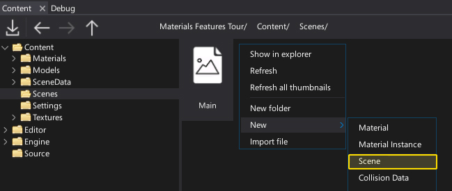
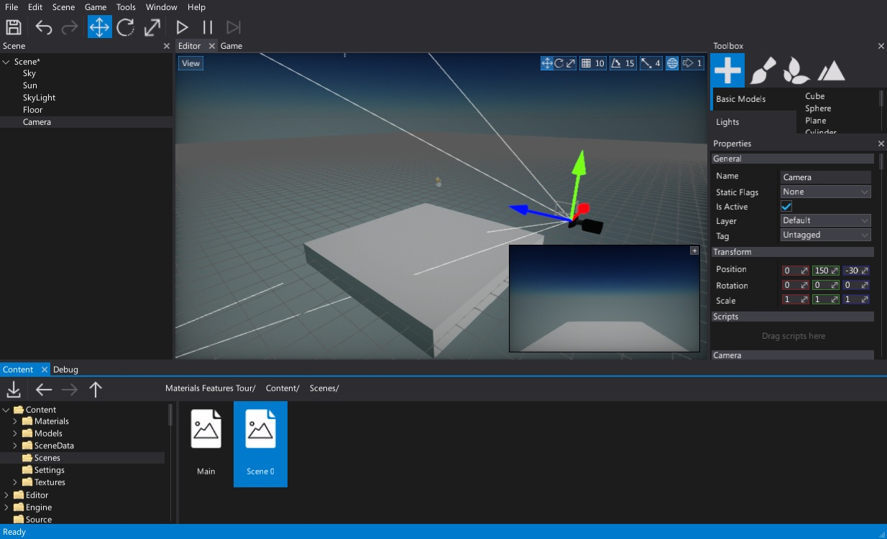
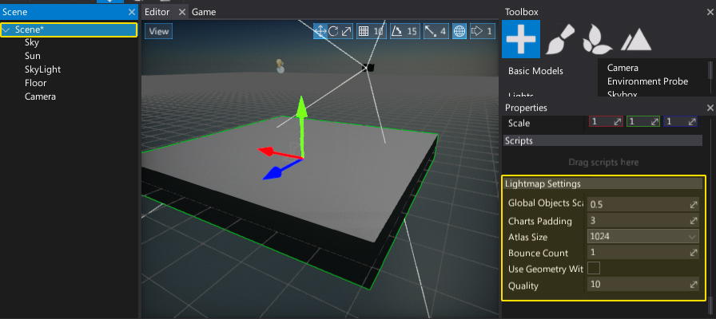

Scenes
Scenes are levels of your game that are composed of Actors. Single scene is an asset stored in a json format and contains serialized scene objects attached to it (actors, scripts, etc.).
Flax supports dynamic loading and unloading multiple scenes. You can open and edit many scenes in the editor at the same time.
Create a scene
You can create scenes like any other asset. Use the Content window. Right-click and choose option New -> Scene. Then specify its name and hit Enter to confirm.

Open a scene
To open a scene, simply double-click on it. You can also drag and drop it to the editor viewport to load it additively (won't unload the existing scenes).

Properties

You an select a Scene actor like the other scene objects using the Scene window and edit it properties with the Properties window. You can change static flags for all scene objects at once or transform whole scene at once. Also scene actor contains options for lightmaps baking for this scene.